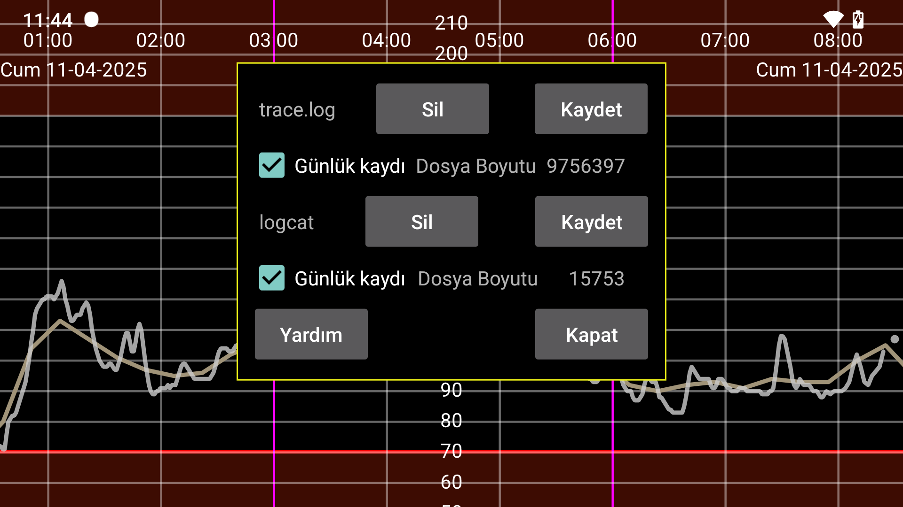

Bu, Juggluco'nun bir günlük versiyonudur. Günlük dosyaları şu şekilde oluşturulabilir: /data/data/tk.glucodata/files/logs
trace.log, Juggluco'nun kendisinin oluşturduğu günlük mesajlarını içerir. logcat.txt, Android'in Juggluco ile ilgili olarak oluşturduğu günlük mesajlarını içerir. Bunları silebilir ve ayrı ayrı kaydedebilirsiniz.
Eğer sorun yaşarsanız bu günlük dosyalarının oluşturulduğu süre boyunca yaşadığınız sorunların açıklamasına ek olarak trace.log ve logcat.txt'yi jaapkorthalsaltes@gmail.com adresine gönderebilirsiniz
File size: günlük dosyasının boyutu
Logging: Trace.log veya logcat'te oturum açın
Delete: günlük dosyasını sil
Save: günlük dosyasını diğer uygulamalar tarafından görülebilecek şekilde kaydedin
Close: bu görünümü kapat